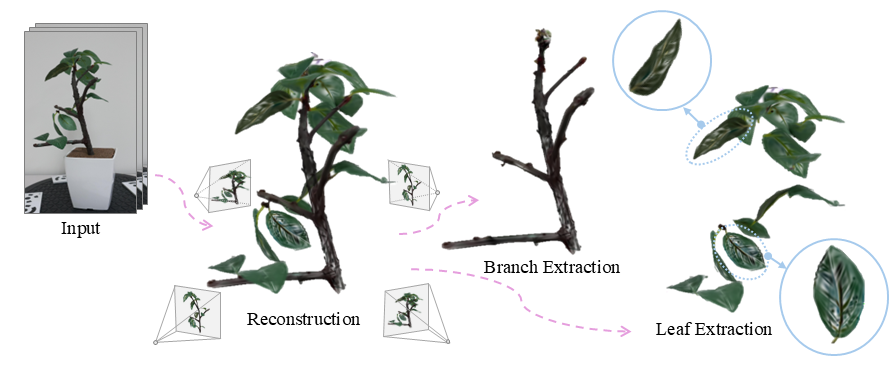

Yang Yang,, Dongni Mao, Hiroaki Santo, Yasuyuki Matsushita and Fumio Okura
Proceedings of IEEE International Conference on Computer Vision (ICCV), 2025 (Highlight).
[paper+supp]
[Project Page]
About me
I am a 3rd year PhD student at Computer Vision Lab, Graduate School of Information Science and Technology at the University of Osaka, Japan, working on 3D reconstruction, 3D generation and novel-view synthesis under the supervision of Prof. Fumio Okura.
Research interests
- Computer vision
- 3D reconstruction and 3D generation
- Differentiable rendering
- Computer vision x Algriculture
Education
| Period | Description |
|---|---|
| Apr. 2023 ~ | Ph.D. of Information Science, School of Information Science and Technology, the University of Osaka, Japan. |
| Apr. 2021 ~ Mar. 2023 | Master of Information Science, School of System Informatics, Kobe University, Japan. |
| Sept. 2015 ~ June. 2019 | Bachelor of Engineering, School of Electronic and Electrical Engineering, Shanghai University of Engineering and Science, China. |
Work experiences
| Period | Roll/Place | Project Description |
|---|---|---|
| Apr. 2023 ~ Present | Research Assistant the University of Osaka, Japan. |
3D plant reconstruction and modeling |
| Aug. 2023 ~ Sept. 2023 | Research Internship Visual Intelligence Research Laboratories, NEC Corp., Japan. |
Multi-modal environment recognition |
| Apr. 2021 ~ Mar. 2023 | Research Assistant Kobe University, Japan. |
Vision-based animal interaction recognition |
Publications
International Conference Paper
Japanese Domestic Conference Paper

Yang Yang, and Fumio Okura
28rd Meeting on Image Recognition and Understanding (MIRU), Aug. 2025.
[Project Page]
Journal Paper
Naoki Asada, Xinpeng Liu, Kanyu Xu, Ryohei Miyakawa, Yang Yang, Hiroaki Santo, Yosuke Toda, Fumio Okura
Plant Phenomics, 7(4):100092.
Skills
- Programming Languages: Python, C++
- Software: Blender, Docker, Git, Latex
- Languages: English (fluent), Japanese (fluent), Mandarin (native)